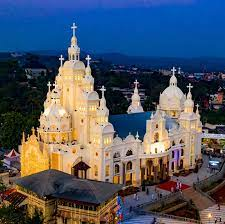

Tourist Places in Kerala
Tourist Spots in Thiruvananthapuram
Padmanabhaswamy Temple
The Padmanabhaswamy Temple is a Hindu temple dedicated to Vishnu in Thiruvananthapuram, the capital of the state of Kerala, India. It is one of the 108 Divya Desams, which are considered the sacred abodes of Vishnu in the Sri Vaishnava tradition.
View more on this topic
View on Google Maps
Shangumugham Beach
Shankumugham Beach is a beach in Thiruvananthapuram district of Kerala, south India. The beach is on the western side of Thiruvananthapuram and is very close to Thiruvananthapuram International Airport.
View more on this topicView on Google Maps
Kovalam Beach
Kovalam is a beach and seaside resort in the city of Thiruvananthapuram in Kerala, India. Kovalam is located 12.6 km (7.8 mi) southeast of the city center. The beaches around Kovalam are popular vacation destinations for both domestic and international travelers.
View more on this topicView on Google Maps
Tourist Spots in Kollam
Jatayu Earth's Center
Jatayu Earth Center, also known as Jatayu Nature Park or Jatayu Rock, is a park and tourism centre at Chadayamangalam in Kollam district of Kerala, India. It stands at an altitude of 350m (1200ft) above the mean sea level.
View more on this topicView on Google Maps
Ashtamudi Lake
Ashtamudi Lake, in the Kollam District of the Indian state of Kerala, is a unique wetland ecosystem and a large palm-shaped (also described as octopus-shaped) water body. It is second only in size to the Vembanad estuary ecosystem of the state.
View more on this topicView on Google Maps
Kollam Beach
Kollam Beach, also known as Mahatma Gandhi Beach, is a beach at Kollam city in the Indian state of Kerala. Kollam Beach is the first 'Beach Wedding Destination' in Kerala.
View more on this topicView on Google Maps
Tourist Spots in Pathanamthitta
Perunthenaruvi Waterfalls
Perunthenaruvi Waterfalls are waterfalls 36 km from Pathanamthitta in Pathanamthitta District, Central Travancore region, Kerala State, India. It is a popular tourist destination situated in Vechoochira Panchayat of Ranni taluk.
View more on this topicView on Google Maps
St. Stephen's Orthodox Cathedral
St. Stephens Cathedral, popularly known as Makkankunnu Pally, is one of the famous Indian Orthodox churches situated at Pathanamthitta in Kerala state of India.
View more on this topic
View on Google Maps
Tourist Spots in Alappuzha
Vembanad Lake
Vembanad is the longest lake in India, as well as the largest in the state of Kerala. The lake has an area of 230 square kilometers and a maximum length of 89.5 km.
View more on this topicView on Google Maps
Alappuzha Beach
Alappuzha Beach is a beach in Alappuzha town and a tourist attraction in Kerala, India. The beach has an old pier that extends to the sea and is over 150 years old.
View more on this topicView on Google Maps
Tourist Spots in Kottayam
Ilaveezhapoonchira
Ilaveezhapoonchira is a tourist destination located in Melukavu village in Kottayam district near Kanjar.
View more on this topic
View on Google Maps
Vaikom Mahadeva Temple
The Vaikom Sree Mahadeva Temple is a temple dedicated to the Hindu god Shiva in Vaikom, Kottayam, Kerala, India. The temple, along with the Ettumanoor Shiva Temple and the Kaduthuruthy Shiva Temple, is considered a powerful place of Shiva.
View more on this topic View on Google Maps
View on Google Maps
Tourist Spots in Idukki
Mattupetty Dam
Mattupetty Dam, near Munnar in Idukki District, is a storage concrete gravity dam built in the mountains of Kerala, India, to conserve water for hydroelectricity.
View more on this topic View on Google Maps
View on Google Maps
Tea Museum
The KDHP Tea Museum is an industry and history museum situated in Munnar, a town in the Idukki district of Kerala in South India.
View more on this topic View on Google Maps
View on Google Maps
Ramakkalmedu
Ramakkalmedu is a hill station and a hamlet in Idukki district in the Indian state of Kerala. The place is noted for its panoramic beauty and numerous windmills.
View more on this topic View on Google Maps
View on Google Maps
Tourist Spots in Ernakulam
Hill Palace Museum
Hill Palace is an archaeological museum and palace located in the Tripunithura neighborhood of Kochi, Kerala. It is the largest archaeological museum in the state and was the imperial administrative office and official residence of the Cochin Maharaja.
View more on this topic View on Google Maps
View on Google Maps
Paradesi Synagogue
The Paradesi Synagogue or the Mattancherry Synagogue is a synagogue located in Mattancherry Jew Town, a suburb of the city of Kochi, Kerala, in India. It was built in 1568 A.D. by Samuel Castiel, David Belila, and Joseph Levi for the flourishing Paradesi Jewish community in Kochi.
View more on this topic View on Google Maps
View on Google Maps
Vypin Floating Bridge
The first-ever Floating Bridge in Ernakulam district was inaugurated on November 1st, also celebrated as Kerala Birth Day. This extraordinary construction can hold up to 50 people at a time.
View more on this topic View on Google Maps
View on Google Maps
Tourist Spots in Thrissur
Sree Vadakkumnathan Temple
The Vadakkumnathan Temple is an ancient Hindu temple dedicated to Shiva in Thrissur, in the Thrissur district of Kerala, India. The temple is a classical example of the architectural style of Kerala and has one monumental tower on each of the four sides in addition to a koothambalam.
View more on this topic View on Google Maps
View on Google Maps
Thrissur Zoo & Museum
Thrissur Zoo or State Museum & Zoo, Thrissur is a 13.5-acre zoo that opened in 1885 in a small area called Chembukkavu, in the heart of Thrissur City, Kerala, India. It is one of the oldest zoos in the country and is home to a wide variety of animals, reptiles, and birds.
View more on this topic View on Google Maps
View on Google Maps
Tourist Spots in Palakkad
Nelliampathi
Nelliyampathy is a hill station, located 60 kilometres from Palakkad, state of Kerala, India. It is surrounded by tea and coffee plantations.
View more on this topic View on Google Maps
View on Google Maps
Malampuzha Dam
Malampuzha Dam is the largest dam and reservoirs in Kerala, located near Palakkad, in the state of Kerala in South India, built post-independence by the then Madras state.
View more on this topic View on Google Maps
View on Google Maps
Tourist Spots in Malappuram
Teak Museum, Nilambur
Teak-Museum is located 6 km from NALMBUR, a town in the Malappuram district of Kerala, South India. Teak occurs naturally in India with the main teak forests found in Kerala.
View more on this topic View on Google Maps
View on Google Maps
Mini Ooty
Arimbra Hills or Mini Ooty is a tourist spot between Malappuram and Kondotty in Malappuram district, Kerala, India. It is at a height of 445 meters above sea level.
View more on this topic View on Google Maps
View on Google Maps
Tourist Spots in Kozhikode
Kozhikode Beach
Kozhikode Beach is a beach on the western side of Kozhikode, situated on the Malabar Coast of India. Kozhikode beach is the most crowded beach in Kerala.
View more on this topic View on Google Maps
View on Google Maps
Pazhassi Raja Archaeological Museum
Pazhassi Raja Archaeological Museum is a museum and art gallery in Kozhikode, Kerala, India. The museum has a rich collection of historical artifacts from 1000 BC to 200 AD.
View more on this topic View on Google Maps
View on Google Maps
Tourist Spots in Wayanad
Edakkal Caves
The Edakkal caves are two natural caves at a remote location at Edakkal, 25 km from Kalpetta in the Wayanad district of Kerala in India. The Stone Age carvings of Edakkal are rare and are the only known examples from South India besides those of Shenthurini, Kollam, also in Kerala.
View more on this topic View on Google Maps
View on Google Maps
Wayanad Wildlife Sanctuary
Wayanad Wildlife Sanctuary is a wildlife sanctuary in Wayanad, Kerala, India with an extent of 344.44 km² and four hill ranges namely Sulthan Bathery, Muthanga, Kurichiat, and Tholpetty. A variety of large wild animals such as gaur, Indian elephant, deer, and Bengal tiger are found there.
View more on this topic View on Google Maps
View on Google Maps
Tourist Spots in Kannur
Thalassery Fort
Tellicherry Fort is located in Thalassery, a town in Kannur District of Kerala state, South India. Thalassery was one of the most important European trading centers in Kerala.
View more on this topic View on Google Maps
View on Google Maps
Arakkal Museum Kannur
The Arakkal Museum is a museum dedicated to the Arakkal family, the only Muslim royal family in Kerala, India. The museum is actually a section of the Arakkalkettu.
View more on this topic View on Google Maps
View on Google Maps
Tourist Spots in Kasargod
Bekal Fort
Bekal Fort is a medieval fort built by Shivappa Nayaka of Keladi in 1650 AD, at Bekal. It is the largest fort in Kerala, spreading over 40 acres.
View more on this topic View on Google Maps
View on Google Maps
Valiyaparamba Back Waters
One of the most picturesque backwater stretches in Kerala, the Valiyaparamba Backwaters is the third largest in the state. It is also a main fishing center in the State.
View more on this topic View on Google Maps
View on Google Maps